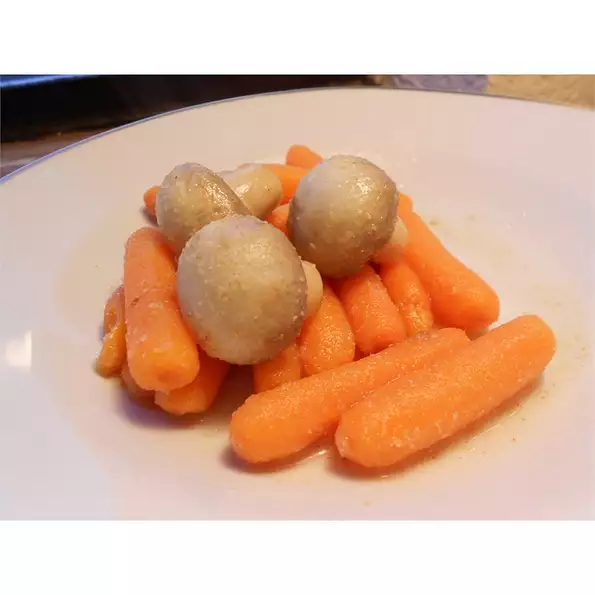

Salad

Description
Spunky cooked vegetables with an intense lemon-garlic flavor.
Ingredients
- 1 (8 ounce) package baby carrots
- 10 mushrooms
- 1 teaspoon ground cumin
Steps
- Combine baby carrots, mushrooms, cumin, and coriander in a pot. Pour enough water into pot to just cover the mixture.
Bring to a boil and cook until carrots are tender, 15 to 20 minutes. Drain mixture and transfer to a large bowl.
- Stir garlic and lemon juice together in a small bowl; drizzle over carrot mixture. Stir to evenly coat.